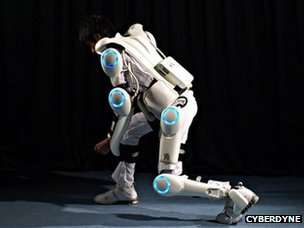

Powered Exoskeleton
Technology

How does the Powered Exoskeleton Function?
Concepts of the powered exoskeleton consist of an outer shell made of lightweight carbon fiber with a hinge joint at the ankle and a single artificial pneumatic that can provide high power outputs while adding minimal weight Sawicki (2007). The
electric signals sent to the brain will increase reaction time and allow the machine to move more smoothly. With this swift movements, the operator of the powered exoskeleton would be able to make the most of what the suit has to offer. Intended
for military use, the powered exoskeleton would be an incredible advantage to any nation that owned it, it could possible do devastating damage to the enemy should it be put to use; it does not have guns in its initial design, but it could illegally
be tweaked to have such features.
Other companies such as the Wyss Institute at Harvard have taken a different approach and have begun developing soft clothing-like exosuits ("Soft Exosuits"). This sort of exosuit would not contain any rigid elements, so the suit would
conform better to the wearer's body. Composed primarily of specially designed fabrics, this "soft suit" can be significantly lighter than an exoskeleton since it does not contain a rigid structure ("Soft Exosuits")which allows the wearer
to feel as if though they are wearing a pair of pants and does not restrict the wearer whatsoever.
References